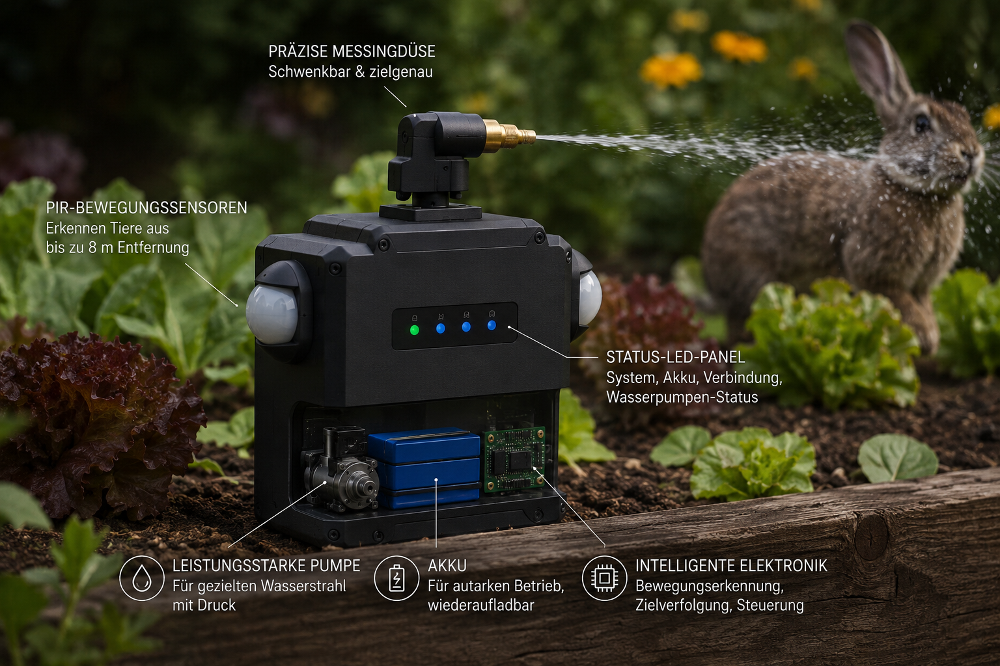

Spatzen zerfressen jährlich Tonnen an Salat und anderen Pflanzen aus unseren Hochbeeten.
Wir müssen endlich einschreiten und uns dagegen verteidigen.
Die "Sensor-Plattform zur Automatischen Tier-Zurückhaltung ist ein ausgeklügelter Mix aus Inovation und hochmoderner Technologie.".
Mit S.P.A.T.Z. betreten wir eine neue Ära der gartenbaulichen Selbstverteidigung. Die „Sensor‑Plattform zur Automatischen Tier‑Zurückhaltung“ stellt nicht weniger als einen Meilenstein im Spannungsfeld zwischen moderner Elektronik, angewandter Ethologie und präzisionsgesteuerter Hydrodynamik dar.
Durch die synergetische Kombination aus multispektraler Bewegungserfassung, algorithmischer Musteranalyse und zielgerichteter Flüssigkeitsprojektion entsteht ein System, das in seiner Effizienz und Eleganz bislang unerreicht ist.
Ziel von S.P.A.T.Z. ist es, ein autonomes, adaptives und nicht‑letales Verteidigungsdispositiv zu schaffen, das in der Lage ist, avianen Eindringlingen mit chirurgischer Präzision entgegenzutreten – ohne dabei die ökologische Balance zu stören oder den menschlichen Bediener zu belasten.
Im Herzen des Systems arbeitet eine hochintegrierte Sensoreinheit, die kontinuierlich die Umgebung analysiert und selbst geringfügige ornithologische Aktivitäten erkennt. Ein mikroprozessorgesteuertes Aktorik‑Modul übersetzt diese Daten in millisekundenschnelle Reaktionen, während ein hydrodynamischer Impulsgeber die abschreckende Intervention in Form eines präzise gerichteten Wasserstrahls ausführt.
Das Ergebnis ist ein harmonisches Zusammenspiel aus Wissenschaft, Ingenieurskunst und praktischer Gartenverteidigung – ein technologisches Bollwerk gegen gefiederte Feinschmecker.
Die beiden PIR-Sensoren fungieren als hochsensible biologische Aktivitätsdetektoren, die kontinuierlich die Infrarotstrahlung der Umgebung erfassen. Durch die Analyse minimaler Temperaturdifferenzen erkennen sie die charakteristischen Bewegungsmuster von Spatzen und anderen Kleintieren.
Durch die symmetrische Anordnung der beiden Sensoren entsteht ein überlappendes Erfassungsfeld, das eine rudimentäre Richtungsbestimmung und eine robuste Erkennung von Annäherungsbewegungen ermöglicht.
Im Zentrum des Systems arbeitet ein ESP32-Mikrocontroller, der als intelligente Steuer- und Auswerteeinheit fungiert. Er verarbeitet die eingehenden Signalschübe der PIR-Sensoren, führt eine logische Ereignisbewertung durch und entscheidet, ob eine Intervention ausgelöst werden soll.
Der Mikrocontroller übernimmt dabei:
Ein kompakter Servomotor übernimmt die mechanische Ausrichtung der Sprühdüse. Anhand der vom ESP32 generierten PWM-Signale positioniert der Servo die Düse in einem definierten Winkelbereich, um den Wasserstrahl gezielt in Richtung der detektierten Bewegung zu lenken.
Eine 12-V-Membranpumpe erzeugt den notwendigen Wasserdruck, um einen kurzen, aber wirkungsvollen Wasserimpuls abzugeben. Dieser wird über eine fein ausgelegte Düse zu einem fokussierten Strahl geformt, der als nicht-letale, aber deutlich wahrnehmbare Abschreckung dient.
Die Pumpe wird direkt aus einer 12-V-Quelle (Akku oder Netzteil) gespeist, um die für den Betrieb erforderlichen Ströme bereitzustellen. Diese Hochlastschiene ist für alle leistungsintensiven Komponenten vorgesehen.
Ein DC-DC-Step-Down-Wandler transformiert die 12 V der Hauptversorgung in stabile 5 V. Diese werden zur Versorgung der logik- und signalorientierten Komponenten genutzt:
Dadurch wird eine klare Trennung zwischen Leistungs- und Steuerebene erreicht, was die Betriebssicherheit und Störfestigkeit des Gesamtsystems signifikant erhöht.
Ein leistungsfähiger N-Kanal-MOSFET fungiert als elektronischer Schalter zwischen Pumpe und Masse. Das Gate des MOSFETs wird vom ESP32 angesteuert und über einen Pulldown-Widerstand definiert auf LOW gehalten, wenn kein Steuersignal anliegt.
Eine parallel zur Pumpe geschaltete Freilaufdiode schützt die Elektronik vor Spannungsspitzen, die beim Abschalten der induktiven Last entstehen.
Wird ein Spatz im Erfassungsbereich der PIR-Sensoren aktiv, erzeugen diese ein Signalmuster, das vom ESP32 als relevante Bewegung klassifiziert wird. Der Mikrocontroller berechnet daraufhin eine geeignete Reaktionssequenz:
Auf diese Weise entsteht ein autonomes, adaptives Abwehrsystem, das technische Präzision mit praktischer Gartenanwendung verbindet – und den Spatzen auf höchst zivilisierte Weise die Lust auf Salat verdirbt.
